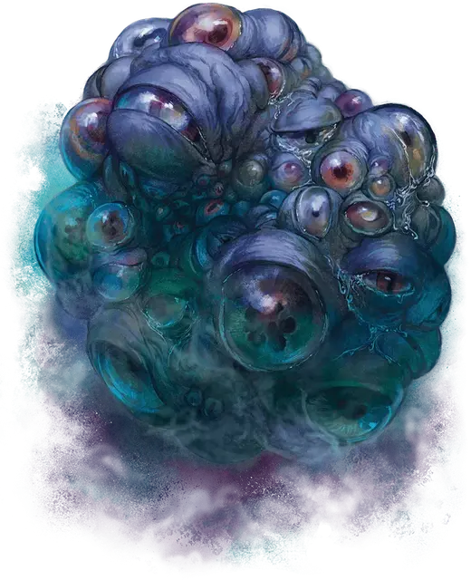

Глазосфера
Oculorb
Большая Аберрация, хаотично-злая

Класс Доспеха 13 (природный доспех)
Хиты 127 (15к10 + 45)
Скорость 0 футов, летая 60 футов (парит)
| мод | спас | ||
|---|---|---|---|
| СИЛ | 13 | +1 | +1 |
| ЛОВ | 10 | +0 | +0 |
| ТЕЛ | 17 | +3 | +3 |
| мод | спас | ||
|---|---|---|---|
| ИНТ | 14 | +2 | +6 |
| МДР | 15 | +2 | +6 |
| ХАР | 19 | +4 | +8 |
Навыки Восприятие +10, Расследование +6
Иммунитет к состояниям ослепление, сбивание с ног
Чувства истинное зрение 60 футов, пассивное Восприятие 20
Языки Глубинная речь, Телепатия 120 фт.
Опасность 9 (5000 опыта)
Бонус мастерства +4
Особенности
Сопротивление магии. Глазосфера совершает с преимуществом спасброски от заклинаний и прочих магических эффектов.
Бдительные глаза. Глазосфера совершает броски инициативы с преимуществом и не может быть застигнута врасплох.
Действия
Мультиатака. Глазосфера совершает две атаки Ужасного Контакта или четыре атаки Луча Глаз.
Ужасающий контакт. Рукопашная атака оружием: +5 к попаданию, досягаемость 5 футов, одно существо. Попадание: 14 (3к6 + 4) урона психической энергии или 25 (6к6 + 4) урона психической энергией, если цель испугана.
Глазной луч. Дальнобойная атака заклинанием: +8 к попаданию, дистанция 120 футов, одно существо. Попадание: 14 (3к6 + 4) урона психической энергией.
Поток антипатии (перезарядка 5–6). Глазосфера выпускает волну негативных эмоций, выбирая один из следующих вариантов:
• Плачущие глаза. Глазосфера рыдает, выпуская волну сокрушительного отчаяния. Каждое существо в пределах 30 футов от глазосферы должно совершить спасбросок Телосложения Сл 16. В случае провала скорость существа снижается до 0 футов до конца следующего хода глазосферы, а если существо поддерживало концентрацию – она нарушается.
• Иссушающий взгляд. Глаза глазосферы высвобождают яростную алую энергию в 60-футовом конусе. Каждое существо в этой области должно совершить спасбросок Мудрости Сл 16. При провале существо получает 33 (6к10) урона некротической энергией и становится испуганой на 1 минуту. В случае успеха существо получает вдвое меньше урона и не испугано. Испуганное существо может повторять спасбросок в конце каждого своего хода, прекращая эффект на себе в случае успеха.
Реакции
Навязчивый упрек. Когда существо, которое глазосфера может видеть в пределах 60 футов от себя, наносит урон глазосфере, она заставляет существо совершить спасбросок Мудрости Сл 16. Существо получает 10 (3к6) урона психической энергией в случае провала или половину этого урона в случае успеха.
Описание
Многие глазосферы созданы бехолдерами [beholder] во сне. Странная сила Дальнего Предела может проникнуть в сны бехолдера [beholder], что приведёт к рождению глазосферы.
Глазосферы напоминают слизистое скопление глаз разных размеров и форм. Их боятся даже те, кто их породил. Глазосфера — это клубок негативных эмоций: ярости, меланхолии и одержимости своего создателя, принявших ужасную телесную форму. Подобно бехолдеру, глазосфера может стрелять лучами энергии из своих глаз, но глазосфере не хватает более сложной магической природы стебельков бехолдера. Вместо этого глазосфера высвобождает мощные волны энергии, заряженные негативными эмоциями, наводя на врагов отчаяние и гнев.